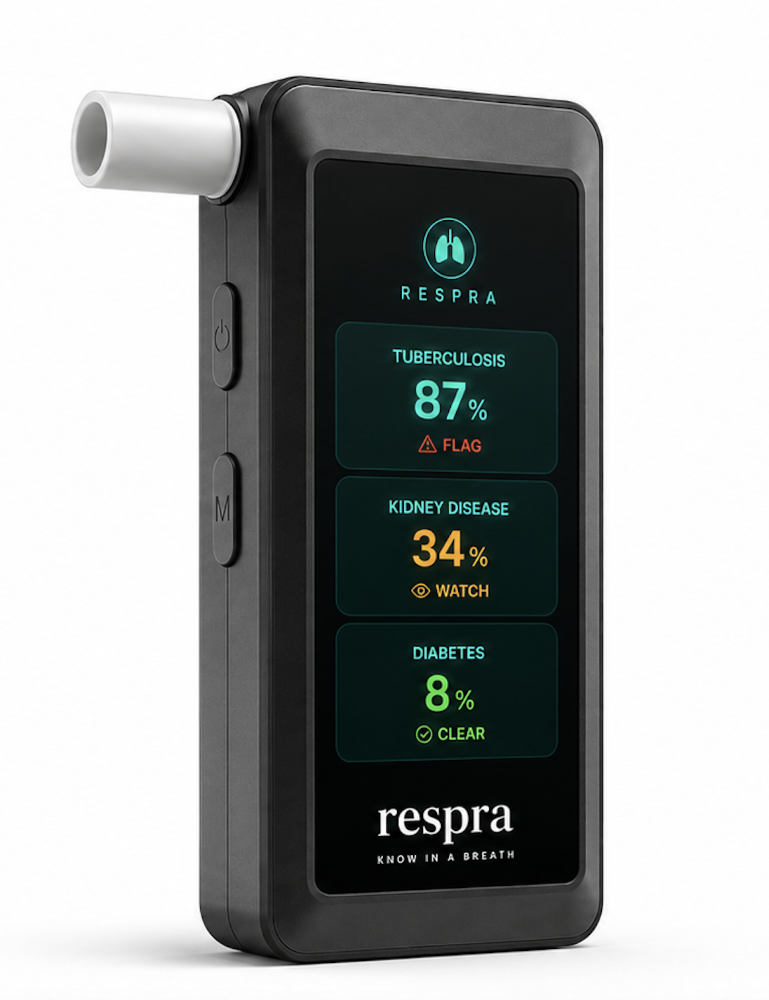
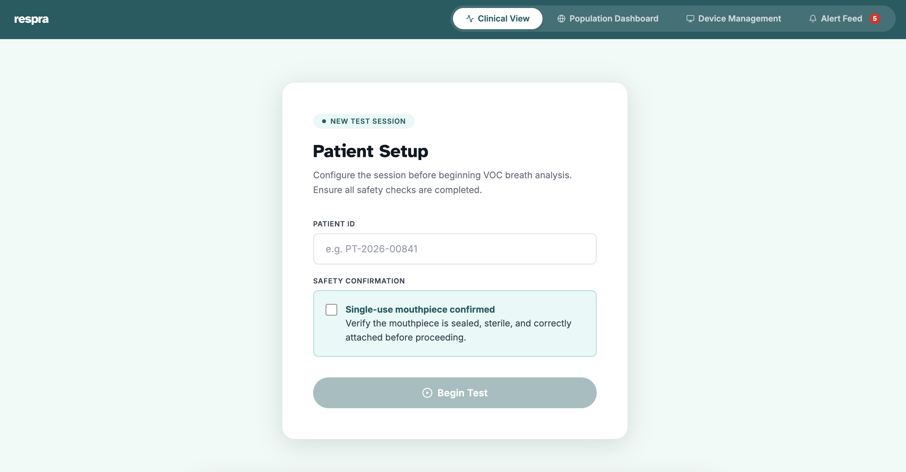
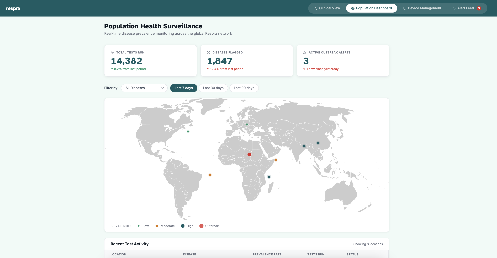
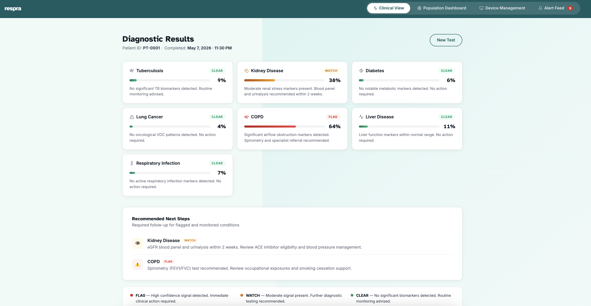
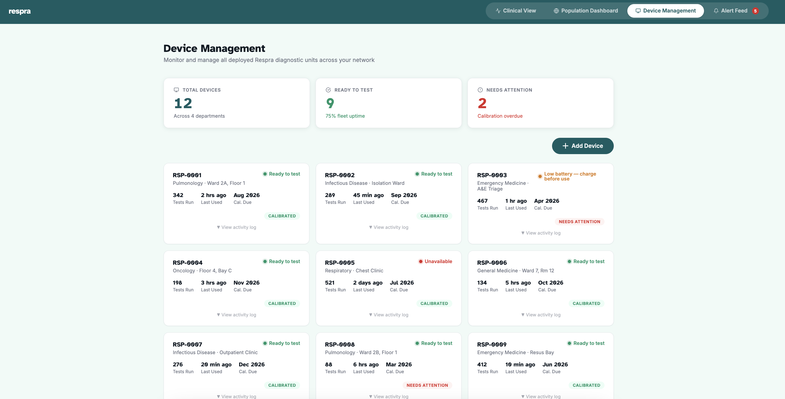

Respra combines a 32-sensor gold nanoparticle array with a federated AI engine trained on thousands of clinical breathprints — detecting 7 diseases simultaneously in under 3 minutes.
Validated at 89% accuracy in a 2023 IASLC trial. Tumour cells release alkanes and aldehydes as byproducts of oxidative stress. Early survival: 64–70%. Late survival: 9–10%.
Breath acetone correlates tightly with blood glucose, and has been validated across 20+ studies since 2009. 252M diabetics globally are completely undiagnosed. $37B/year in avoidable US complications alone.
70% of COPD patients remain undiagnosed. COPD-driven inflammation produces elevated pentane and oxidative stress markers. Active clinical validation ongoing, and will cost the global economy $4.3T between 2020–2050.
Most validated breath biomarker set globally. Tested in Cameroon and South Africa with 85%+ sensitivity. ~2.7M TB cases missed annually. One untreated person infects 10–15 others.
Dimethyl sulfide is a confirmed marker of hepatic encephalopathy. Owlstone Medical is in active Phase 2 trials for breath-based liver disease detection. Often asymptomatic until cirrhosis, causing 2M deaths/year.
COVID-19 breath detection achieved 85% accuracy in the 2022 UK REACT study. Viral and bacterial infections produce distinct inflammatory VOC signatures. Individuals spread infection before they know they're sick.

The Respra device is a portable unit, designed for clinic-grade deployment with no lab infrastructure, no specialist, and no consumables beyond a single-use mouthpiece costing $0.20. Breathe for 10 seconds, get results in under 3 minutes.
The 32-sensor gold nanoparticle array uses nanoparticles coated with organic ligands — each responding differently to different VOCs. When breath passes through, electrical resistance changes across each sensor in proportion to VOC concentration, producing a unique fingerprint pattern for each breath sample. Results display on the integrated screen and push to the clinic's EHR via HL7 FHIR.
Raw resistance readings across all 32 nanoparticle sensors are normalized and denoised in real time, producing a clean VOC fingerprint from each breath sample.
The VOC fingerprint is transformed into a disease-relevant feature vector using our proprietary spectral decomposition layer, isolating signals from dietary, environmental, and medication confounders.
A deep learning model scores the sample across all 7 Phase 1 disease signatures (TB, diabetes, CKD, lung cancer, COPD, liver disease, and respiratory infections) with calibrated confidence outputs.
Structured report delivered in under 3 minutes with confidence scores, severity indicators, and next-step recommendations. Anonymized data feeds back into the global federated model, so every test makes Respra smarter.
Against traditional diagnostic modalities for broad-spectrum disease screening.
| Criterion | Respra | Blood Panel | CT / Imaging | Biopsy |
|---|---|---|---|---|
| Non-invasive | ✓ | ✗ | ✓ | ✗ |
| Result in <5 minutes | ✓ | ✗ | ✗ | ✗ |
| Multi-disease screening | ✓ | Partial | Partial | ✗ |
| No specialist required | ✓ | ✓ | ✗ | ✗ |
| Low-resource deployable | ✓ | Partial | ✗ | ✗ |
| Patient comfort (1–5) | 5 / 5 | 2 / 5 | 3 / 5 | 1 / 5 |
A glimpse at the Respra diagnostic interface, built for clinical environments.



